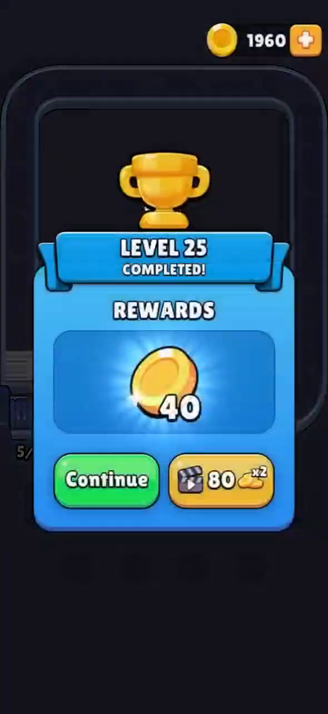
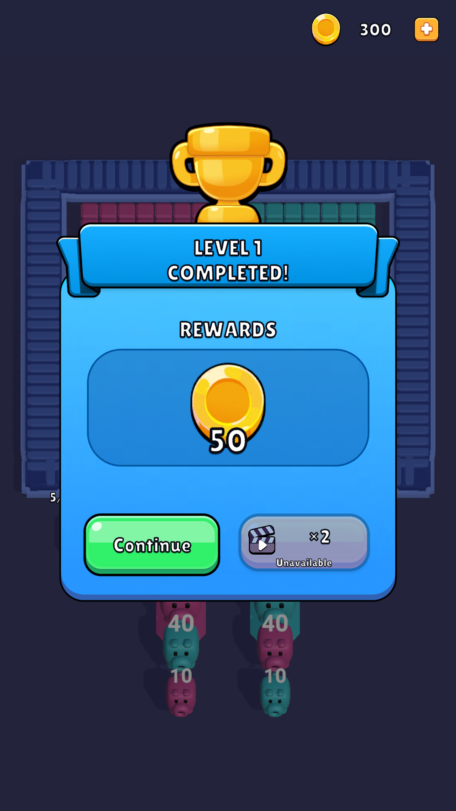
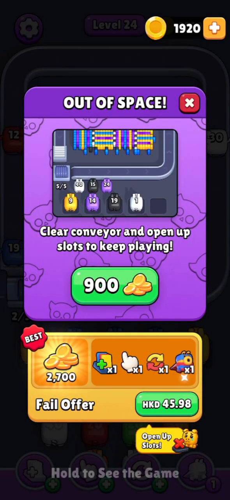
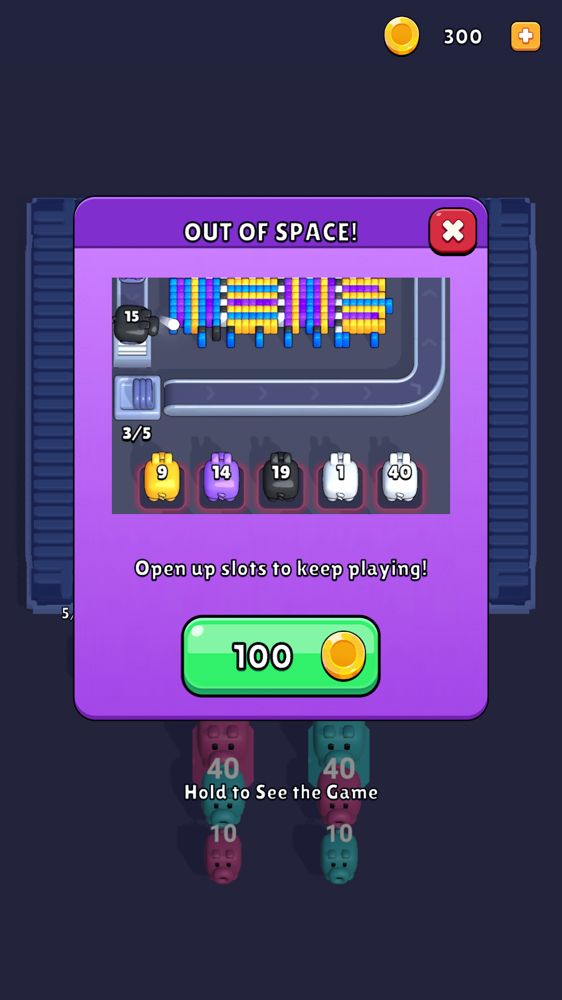
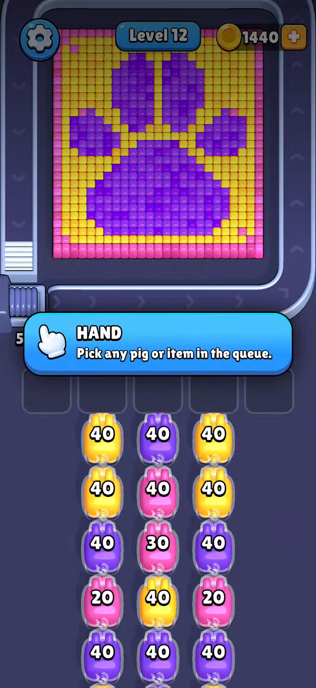
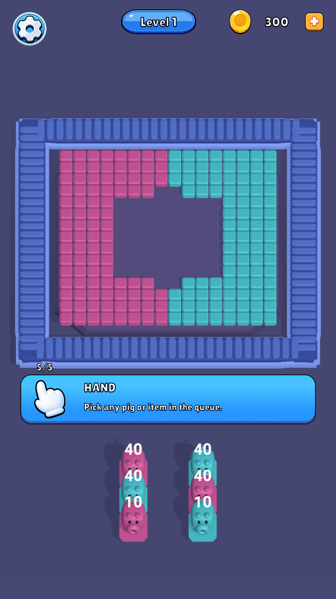
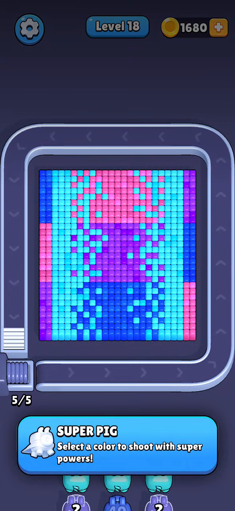
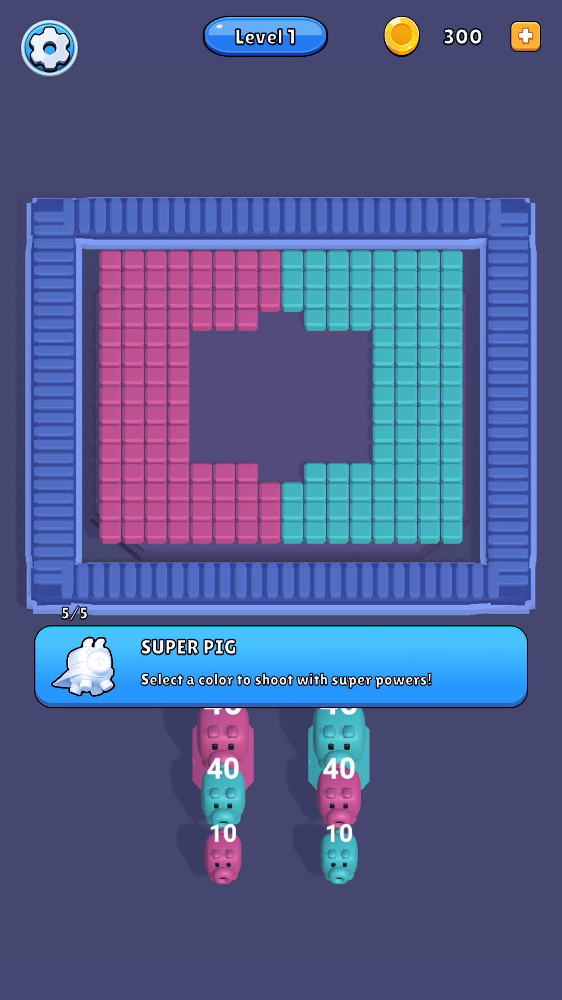

Prefab GameplayPanel hiện có, art/font/video0.36.3; một SafeArea, scaler1080×1920/0.5. Thay đổi và giới hạn · Art/GUID/hash · Audit · Cách chụp · REA metadata.
144 cases have latest passing results: full run141/144, then targeted rerun3/3 after fixture repairs. Aggregate coverage, not one144/144 run. Case ledger / Failure and interruption history / Validation.
Đối chiếu bố cục/trạng thái, khác level và có thể khác build: MGFTUE được nhận diện0.32.1(263); video09GameReview chưa xác minh phiên bản. Ảnh clone là Game View thật ở Editor; win/fail dùng fixture trình bày, không phải kết quả tự kiếm. Luồng terminal/save/mua được kiểm thử riêng. Giá/reward/revive hiện tại chưa chứng nhận theo0.36.3; quảng cáo unavailable, gateway IAP giả theo yêu cầu. Chưa hoàn thiện whole-game parity.








Đã tắt đúng instance FoundationDemo làm lộ ToggleButton ở mép màn hình; prefab/template nguồn và scene GUID được giữ. Board/belt/animation, target-version tuning và các provider production vẫn chưa được nghiệm thu.